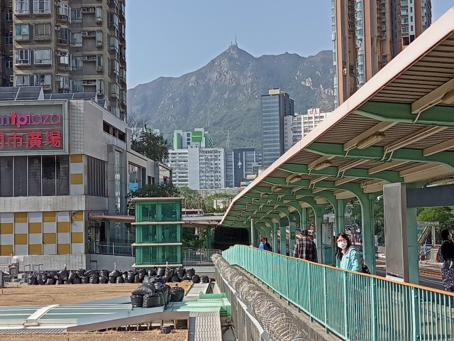
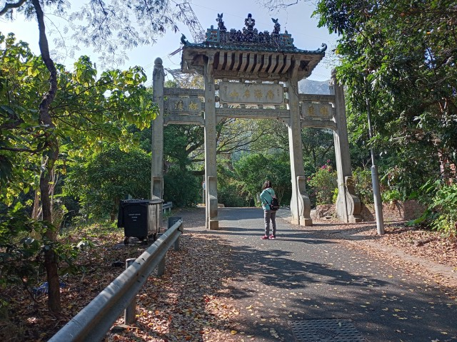
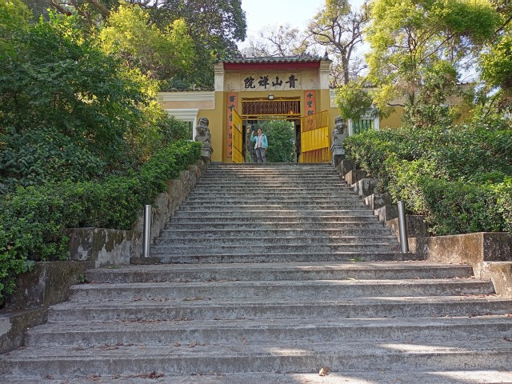
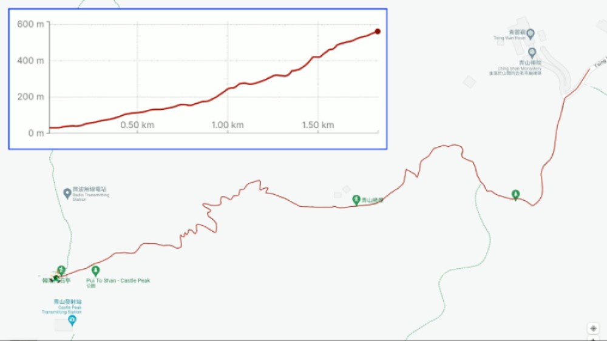
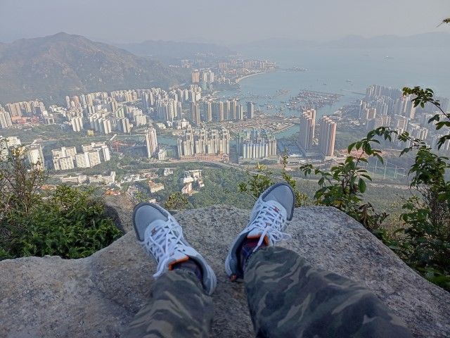
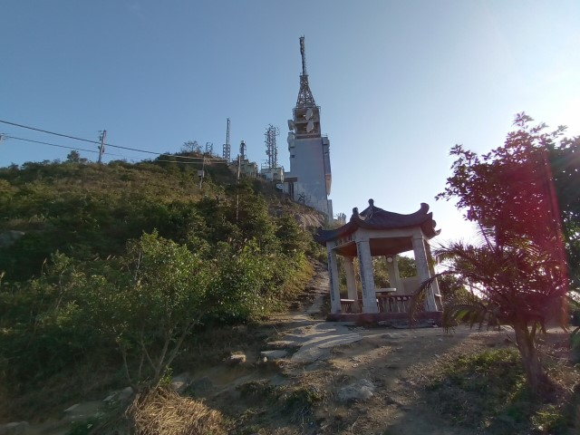

在2022年1月11日, 我和 Kathy 去了屯門旅行。主要是往位於青山東面山麓的青山禪院 (又稱為青山寺) 遊覽和攀登上海拔 583米高的青山頂峰。
三十多年前，因工作關係，我們曾經在屯門短暫居住了5年。居住在屯門的那段日子，我們去了青山寺很多次，也曾經登上青山頂峰幾次。
自從離開屯門返回荃灣居住後，都再沒有到青山遊覽了。雖然去了青山很多次，但從來都沒有拍照。過了那麼多年，記憶都有點模糊，今次重遊，希望可以填補失去的一些片段。
我們在早上吃完早餐，看見天色晴朗，便立即準備往青山的一些資料，然後出發。
很順利搭乘了 53號巴士往屯門。在屯門市廣場下了車，已經是早上 11:15, 便往屯門市廣場一期2樓的屯門美食廣場 Food Maze 吃午餐。美食廣場面積很大，裝修高尚，座位舒適，内有11間本地及海外餐廳，供應西式、日式、韓式和中式等美食，價錢十分大眾化。
因美食廣場剛剛在早上11:30才開始營業，所以顧客不多。我們看見大部份顧客都集中光顧其中一間中式餐廳，在羊群心理下，我們也在那裡各自買了一個兩餸飯。
吃完午飯，便正式開始今天的屯門行程。
我們的行程很簡單: 首先往青山東面山麓的青山寺遊覽, 然後攀登上海拔 583 米的青山頂峰。
我們每次去青山寺，都是從屯門市區步行前往。路線其實很簡單，沿杯渡路走到尾，再循青山寺徑一直往上走便是，今次也不例外。
從屯門市廣場第二期北面的出口離開，在天橋上已經看到遠處尖削的青山。青山頂峰上比以往我們攀登時多了一座發射塔, 感覺有點古怪。
沿杯渡路朝著青山的方向走。走下天橋, 經過 V City 大型商場, 再往前走一會，發覺屯門河前的一段杯渡路現在被新建的港鐵屯門站攔截了, 不可以像以往那般一直走到尾。
看見這樣, 自然想到穿過屯門站大樓到另一邊。
沿其中一條往上的手扶電梯進入大樓，原來是月台，就掉頭返回地下，轉乘另一條電梯，這樣才順利進入車站大樓。
車站大樓内沒有往杯渡路的出口，唯有一直向前行，最後走了幾分鐘，前面才有出口。
從 F1出口走出車站，發覺這裡離開杯渡路已經差不多有500米了。
接著乘電梯往下面的街道，跨過屯門河，轉右沿河邊的步道走，經過輕鐵河田站，再向前走幾分鐘才返回屯門站後面的杯渡路，足足拐了一個大彎, 浪費了二十分鐘。
跟住沿杯渡路走到尾，轉左沿青雲路走，沿途都可以看到遠處尖削的青山。看來好像很高, 不過, 只要一步一步往上走, 登上頂峰並不是太困難的。
從行人天橋走到青雲路對面，拐過香港專業教育學院，然後循楊青路走，已經有往青山寺的標示，再往前一會便來到青山寺徑的入口，這裡也是青山寺和青山的登山口。
從這裡開始, 只要沿青山寺徑一直往上走便可抵達位於青山東面山麓、海拔151米高的青山禪院。
道路好斜, 一直蜿蜒上山, 走起來非常吃力。幸好道路兩旁綠樹成蔭, 也不至於太辛苦。
向上走了約8分鐘, 來到青山十景之一的挹曉亭。
1922年，何東爵士與夫人登山往青山寺，步行到這裡, 未及一半路程已感到非常疲倦, 於是在此建造挹曉亭, 供登山人士休息之用。
繼續向上走, 經過至和壇, 再往上走一會, 迎面就是位於青山禪院前的香海名山牌樓。
香海名山牌樓建於1929年，是為了紀念香港第十七任港督金文泰於1927年6月和1928年3月兩度登臨青山而立。當港督金文泰登上青山頂峰後, 環顧四周壯麗景色時, 讚嘆「香海名山」。香海名山牌樓正面橫匾「香海名山」四字, 雄渾有勁, 正是由金文泰親題。而牌樓背面橫匾「回頭是岸」則由鐵禪法師親題。
穿過香海名山牌樓, 前面是一條分叉路口, 右邊是山景徑, 可以往山下的山景邨。
我們繼續向上走, 不經不覺來到來到青山禪院的山門下。
拾級而上, 便進入了青山禪院。
青山禪院位於海拔151米高的青山山麓中, 可以俯瞰山下屯門優美景色。
青山禪院，又名青山寺, 與八鄉凌雲寺及元朗靈渡寺合稱香港「三大古剎」。因杯渡禪師曾居住這裡，所以青山古稱杯渡山或聖山。青山禪院創建於一千五百年前的東晉末年, 最初只是一個岩洞及一間茅屋而已, 這就是最初的「杯渡廟」。岩洞內有一平石，是杯渡禪師最初到青山居住的地方，後來, 杯渡禪師的徒弟在在岩洞前搭建茅屋, 作為寺廟。到了五代十國，廣東地區隸屬南漢統治，其君主篤信佛教，命人在山上興建一間「杯渡寺」，這就是「青山禪院」的前身。其後曾多次重建。
1829年, 屯門陶氏族人在「杯渡岩」附近興建了青雲觀, 是香港現存最早的道場。至此, 青山禪院大致上已經形成了一個規模很完善的禪寺。
青山禪院內有一條李小龍事蹟紀念徑, 記錄了我的超級偶像李小龍於1973在這裡取景拍攝電影「龍爭虎鬥」的一些事跡。
遊覽完青山禪院, 從山門離開。接著的行程是攀登上 青山頂峰。
青山高海拔 583 米，山型尖削，與西貢的蚺蛇尖和釣魚翁並稱為「香港三尖」。
青山山勢險要, 道路陡峭, 因 Kathy 體力已經遠遠不及當年, 恐怕她應付不來, 所以決定由我獨自登山, 而她提早下山，先行乘車返家。
對我來說, 攀登青山的難度只是一般, 以往也曾經多次登上, 而且, 相信現在的登山步道肯定完善很多, 所以連水也沒有帶, 可以講是赤手登上。
沿斜坡往上走, 不一會便來盡頭, 這裡也是青山寺徑的盡頭。
接著走上一段長長的階級, 這一段步道稱為孝思徑。以往走的山路, 現在除了鋪設得很好外, 更有了名稱。
步行一會便來到一個涼亭。
沿孝思徑繼續往上走, 拐了幾個彎後, 迎面是一個分叉路口。
向前的步道是往散石灣的散石灣橫山徑。右邊的步道是青山徑, 只要循這步道一直往上走便可上青山頂峰。自從鋪設了完整登山步道後, 各段步也劃分了名稱, 所以也有人認為這裡才是青山的登山口。
青山徑入口有一個涼亭, 讓旅客養精蓄銳後才開始登山。
青山徑入口還有一個告示: 警告旅客此段道路艱險難行, 只宜有經驗及裝備良好的遊人前往。
Okay! 正式開始登山啦！
從這裡開始，彎彎曲曲、陡斜步道一直蜿蜒上山，用天梯來形容最為貼切, 頗為吃力。
沿天梯一直向上走了約15分鐘, 穿出樹林, 眼前豁然開朗, 來到山腰中較為平緩的一段步道, 青山頂峰就在前面, 離這裡還很遠呢!
這裡是位於青山山腰海拔293米高的地方, 屯門市、蝴蝶灣、遠至大嶼山的景色，盡入眼簾，景色優美。
平緩步道的盡頭是綠屋。看來是一個發射站。明明是紫紅色，為什麼叫綠屋呢？
繼續行程。迎面又是向上的長長天梯。
天梯路口又有「此段道路艱險難行」的警告告示。
沿天梯往上走一會，這裡才清楚看到綠屋的真面目。
越往上走，視野越廣闊，景色壯麗。
山中有一個小型觀景台, 可以在這裡休息一會及看風景。
沿青山徑入口一直向上走了約一小時，來到一段依崖而設的狹窄陡峭山路，下面是深谷，十分險要。幸好在崖邊加上了繩索，走起來除了安全外，更可借力而上。感覺這段路有些像黄山和華山的風貌, 突然間勾起了當年登山的一些回憶。
走過陡峭險要的一段山路後，來到山中的一小段平路, 可以休息一下啦。
這裡海拔420米高，可以說是一個觀景台，可以眺望屯門市、元朗平原，遠至天水圍都可見到，有如一幅長長的圖畫，景色非常壯麗。
在觀景台欣賞完風景，繼續行程。
沿階級繼續往上走。
來到另一個觀景台。這裡的視野比剛才的觀景台更佳，整個屯門市就在腳下，更有大地在我腳下的感覺！不過，觀景台其實只是一塊很細的岩石，沒有扶手、繩索和欄杆，下面是萬丈深谷，要十分小心。
繼續行程。
青山頂峰就壓在眼前，離目的地不遠了！
沿階級一直往上走，一段緊接一段，完全沒有喘息的機會。
突然間，豁然開朗，迎面是一個涼亭。
從青山徑入口一直向上走，用了約一小時三十分，終於登上了海拔 583米高的青山頂峰啦！
涼亭建於1929年，上刻有「韓陵片石」四個大字，所以也稱為韓陵片石亭。話說當年港督金文泰曾兩次遊覽青山，於第二次才成功登上青山頂峰，因此建造這個涼亭以作紀念。
站在青山頂峰眺望，群山糾紛，遠至后海灣對面的蛇口市也隱約可見。
其實這裡離青山頂峰還有一小段山路，再走幾分鐘便可到達。不過，不知何年，山頂上建造了一座發射站，所以沒有再往上走了。
在青山頂峰逗留了一會，接著循原路下山。
約40分便來到青山禪院的山門，繼續往下走，穿過香海名山牌樓，不一會便返回山下的青山寺徑入口。
接著步行往青雲路，乘57M巴士返回荃灣。
就這樣結束了今天的青山行程啦！